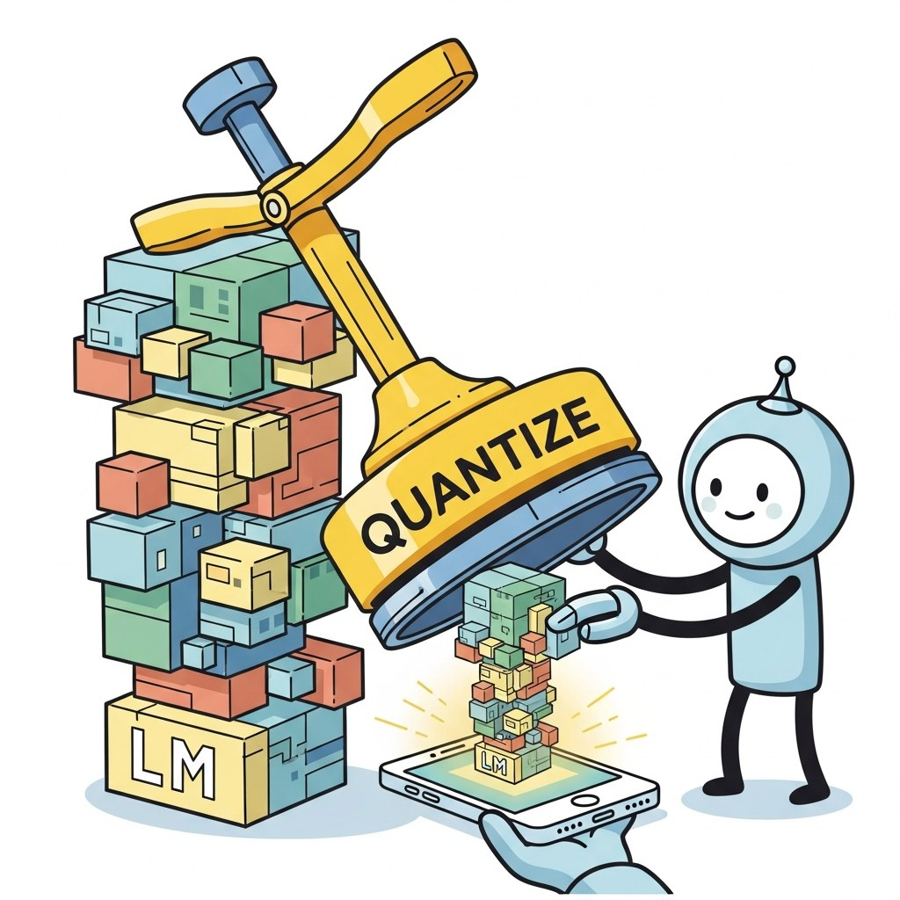

Big Picture
Not every LLM workload belongs in the cloud. This chapter covers running models on consumer hardware (laptops, phones), quantization for edge, framework support (llama.cpp, MLC, MediaPipe, Core ML), privacy-preserving on-device inference, and the operational patterns that differ from server-side serving.
Sections in This Chapter
What's Next?
This chapter begins with Section 60.1: Edge and On-Device LLM Deployment. Each section builds on the previous one, so we recommend reading them in order.